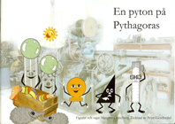

|
Startsidan
Böcker
Dramatik
Kultur-/barnprojekt
Margareta Lindberg Sigfrid |
|

2008 |
2008 CD |
|
Det här är andra boken om Pythagoras Hemliga Vänner. En kylig decembermorgon när museichefen kom till jobbet hängde det en blöt strumpa på dörrhandtaget. Hon tog strumpan och la den i en låda med kvarglömda saker inne på kontoret. - Det kommer nog snart någon och hämtar den, tänket hon. Den ser ju så trevlig ut med sina glada färgränder. Men ingen kom Den lilla strumpan låg i sin låda och längtade efter sin fot och efter sin make. Ibland grät hon så att hon höll på att filta ihop. Men en dag bestämde Pythagoras Hemliga Vänner sig för att ge henne ett nytt liv och göra henne glad igen. Det visade sig vara ganska svårt. De hittar på massor av tekniska fiffigheter, men det är en ovanligt svårroad strumpa. Boken ingår i Pythagoras Industrimuseums pedagogiska program "Teknikundervisning som tar skruv". Den kan också läsas av ren nöjeslystnad. Sagorna och sångerna om Pythagoras hemliga vänner och om En pyton på Pythagoras finns också inlästa på en CD som kan beställas från Pythagoras Industrimuseum i Norrtälje. Tel.0176 - 10050 Illustrationer: Peter Geschwind ISBN 978-91-977994-1-6. Utgiven av Pythagoras Industrimuseum 2008. |